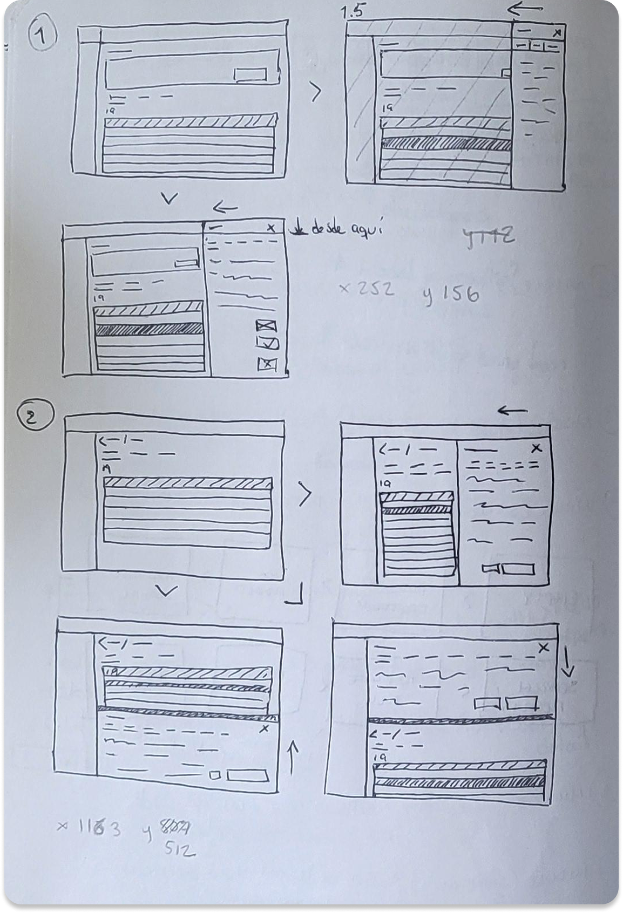
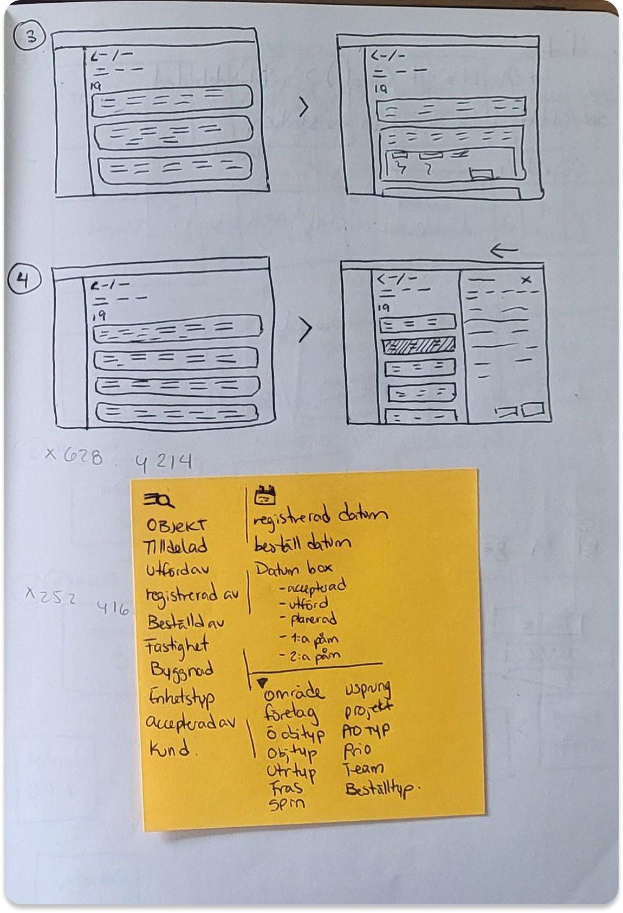

Fast2 is a software initiative from Service Works Global. SWG’s objective is to be the go-to for property management by offering comprehensive solutions that facilitate the management their customers' spaces and properties.
Fast2 has two core users, the building managers, and the people that perform the work orders.
They have different contexts and points of interaction. The managers access the system from a stationary
point, usually their office (desktop). The inspectors and order workers access the system mostly from the
field (mobile) but sometimes they might complete and close the order from the office (desktop).
Fast2 was a native desktop software that was complemented with 3 different mobile apps. The product I
worked on combined all the Fast2 branches into one web app.
In the Fast2 web app the users are able to create, manage, and perform inspections, work orders, and tasks.
They can also access information about the properties and the customers.


I started with a workshop where we established the relationship between the existing software and apps. The result was the identification and documentation of the most important user flows. With this a roadmap of the product was created. We then used this information to create a map of the future Webapp so everyone would know the structure and features to be developed.

Considering there was no existing design system, I started a Figma file and defined a colour palette, fonts (based on
the graphic manual), and created the base components, such as buttons, fields, controls, etc.
We worked with an agile methodology, so most of the sprint cycles worked like this:
I reviewed existing user research and interviewed some users to begin the design of the flows. I sketched some alternatives to explore different layouts and the impact they could have when considering breaking points. Then I had a discussion with the team about feasibility, time, etc.


Work in 3-4 medium fidelity wireframe flows. The wireframes were then showcased to users and stakeholders to get feedback.


I refined the design into 1 high fidelity prototype and hand over to the development team through Figma and/or meetings.
If there was more feedback after implementation I would redesign or restart the cycle.
Have a strategy for scalability. The work order flow, had to be re-designed and re-developed, because when the project moved along we realised that we couldn’t use the same patterns for other flows because they demanded a more complex input of information. This could have been solved by considering the possibility of growth from the first flow of creation, as in using components that were more modular so they could be easily changed and dynamic. Another possible solution would have been mapping the creation flows to be able to know the big picture from the start.
Get the web app structure agreed upon by everyone and well documented. This way everyone will be in the same page about the
features to develop, and can provide input when presented with the design and direction of the project. Makes it for
less surprises during the process.